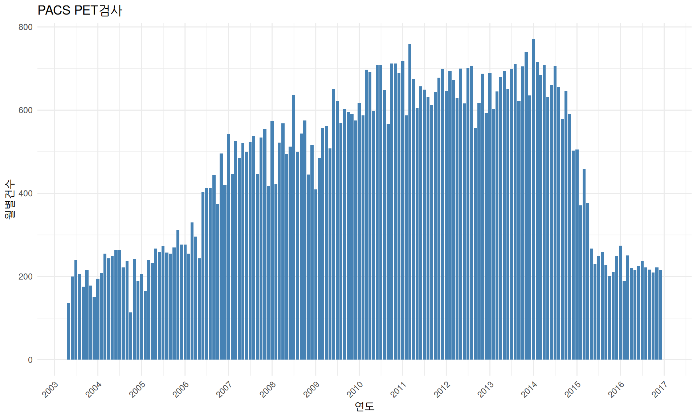

Access PET DATA
Access 구현 핵의학과 PET 판독/준비기록
1 Access 판독/준비기록 PACS/OCS 이관
원자력병원 핵의학과에 PET이 설치된 당시에 판독은 Microsoft사의 Access database에 감마와 PET 판독을 입력하는 시스템을 사용했습니다. Access 상의 최초 PET ExamDate는 1997-07-16입니다. 50년사에는 PET 기동식이 1997-08-02로 기록되어 있으며 날짜를 비교해보면 기동식 이전에 판독입력은 약 2주전부터 이미 시작되었습니다.
2000년 경에 EMR (Electric Medical Record)과 함께 OCS(Order Communication System)이 도입되었습니다. 이 때부터 오더가 있는 공식적인 판독은 OCS에 입력을 하게 됩니다. 하지만 당시에는 연구목적의 PET 등은 오더가 대부분 없었기 때문에 이런 경우들은 Access에 입력을 하게 됩니다. 따라서 OCS상의 최초 판독일은 2000-07-04이지만 Access 판독은 2009-07-09까지 존재합니다.
2003년 경에는 PACS가 도입됩니다. 이때부터 판독입력은 PACS에 직접 입력하게 되지만 결국은 OCS에도 저장되므로 판독기록의 보존이라는 측면에서는 차이가 없는셈입니다. 다만 Legacy PET Imaging Archive System 이외에 공식적인 PET(/CT) 저장이 새로 생겼다는 차이가 있습니다. 사실 Legacy PET Imaging Archive System은 magnetic tape, optical magnetic disk, CD 등으로 변모해왔지만 오랜시간이 경과하여 오류률이 높아서 실제 사용이 어렵기 때문에 PACS에 PET/CT image가 저장된다는 것은 상당한 장점이 있습니다.
마지막으로 NM miniPACS에도 영상기록이 보존되어 있습니다. 공식적으로 저장되기 시작한 날짜는 확인이 필요합니다. 영상보관면에서는 PET sinogram은 아니지만 reconstructed low data가 저장되어 있으므로 그러한 장점이 있습니다. 한가지 명확하지 않은 것은 reseach PET data의 경우 NM miniPACS에 저장하는 것도 고려됩니다.
2 OCS PET 판독건수
- 2017년 경에 전산팀으로부터 받은 자료 (이하 동문)
2000-07-04부터 OCS에 PET 판독이 입력되기 시작함- OCS PET 준비기록 자료가
2016-12-31까지여서 OCS PET 판독도2016-12-31까지 분석 포함 - 외부판독은 제외함.
- OCS PET 판독건수는 65558건
- 2006~2007년이 비어있으며 전달받은 파일의 오류로 판단됨.
3 PACS PET 검사기록

- 2017년 경에 전산팀으로부터 받은 자료
2003-05-12부터 PACS에 PET 영상이 등록되기 시작함- 외부판독은 역시 제외함
- OCS상의 PET 준비기록이
2016-12-31까지 여서 판독기록도2016-12-31까지만을 대상으로 함 - 2006~2007년 데이터가 온전해 보임.
4 OCS PET 준비기록
- OCS PET 준비기록은
2016-12-31까지 전달받음 - 기록상으로는
2007-12-14부터 시작되지만 의미있는 시작은2010-01-04부터임 - 외부판독의 경우 준비기록에는 포함되지 않음
5 Access PET 준비기록
- 분석기간은 readings_pacs를 기준으로
2003-05-12~2016-12-31
- 2000-01-25부터 Access에 PET 준비기록이 입력되기 시작함
- 2009-08-07까지 입력되어 있음
- OCS에 준비기록이 입력된 후에서 연구용처럼 오더가 없는 경우는 Access로 준비/판독 되었음